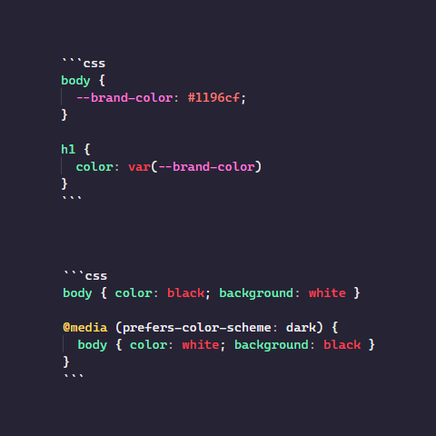

Adding automatic dark mode to a website
CSS variables have become mainstream, but I was too busy with CSS-in-JS solutions for React that I hadn't previously had an opportunity to learn the details or implement them in any environments.
As I reset this site I took this opportunity to explore the options available to make use of CSS variables and some of the newer media queries added to browsers in recent years.
CSS Variables
To start with, CSS variables are a new way to define properties in CSS. They start with a double-dash, such as --example, and can be assigned to a CSS property using the notation var(--example).
So to define a variable for particular colour, then apply this colour throughout the rest of the CSS rules can be achieved with.
body {
--brand-color: #1196cf;
}
h1 {
color: var(--brand-color)
}CSS Variable Scope
CSS variables also bring scoping. A variable can be defined at any level of the document, such as body in the example above, and will be available to all context below it. Variables which are intended to have global scope, available to the entire document, the :root scope should be used.
The scoping of a variable also applies to definitions and overloading, so a variable may have one value in the global scope and another value in a local scope.
Prefers Color Scheme: Dark
The prefers-color-scheme media query has been added to modern browsers to indicate to a website whether the user has defined a preference for either light or dark color schemes.
This would allow a website to tailor the experience to the user by displaying light text on a dark background by overriding the color and background colours for the page, such as in this example:
body { color: black; background: white }
@media (prefers-color-scheme: dark) {
body { color: white; background: black }
}Combining Prefers Color Scheme and CSS Variables
Combining these two new techniques would allow a website's theme to be quickly configured for light and dark modes, setting variables to be used for each of the different component colours - or even any CSS property.
Once these variables have been defined, they can be used throughout the rest of the site to set the properties of the elements being rendered on the page.
This example below defines several variables that that are used in the theme of this site, setting variables --foreground, --background and several others for a light mode theme, which are then overridden with a new set of colour values corresponding to a dark mode theme. Also in this example, the dark mode theme would only be applied for screen, so they would not be used in a print context.
:root {
--foreground: #3c363d;
--background: #f4eff5;
--background2: #e5dfe6;
--code-background: #0e050e;
--link: blue;
--visited: purple;
}
@media screen and (prefers-color-scheme: dark) {
:root {
--foreground: #ddd4df;
--background: #160d16;
--background2: #241824;
--link: #8989ff;
--visited: #e934e9;
}
}Once these variables had been defined, they are used throughout the rest of the site's stylesheet.
body {
line-height: 1.5rem;
color: var(--foreground);
background: var(--background);
background: linear-gradient(var(--background), var(--background2));
}
a {
color: var(--link);
}
a:visited {
color: var(--visited);
}
code {
background: var(--background2);
}